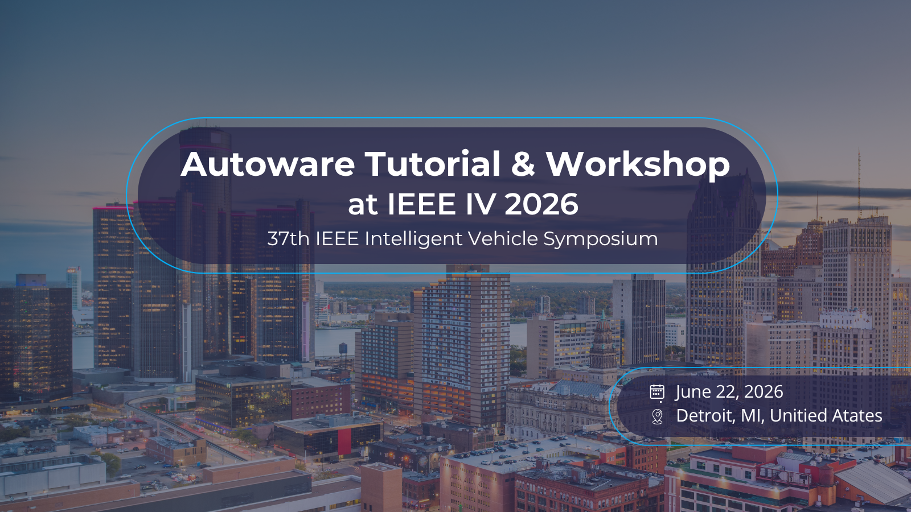
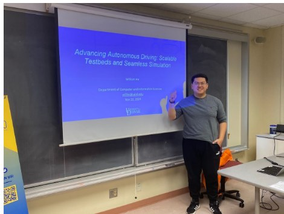
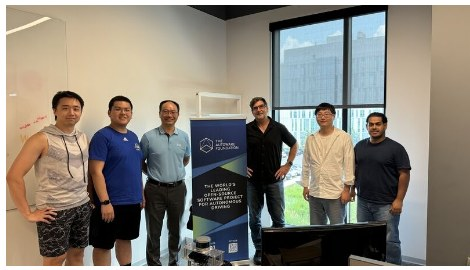
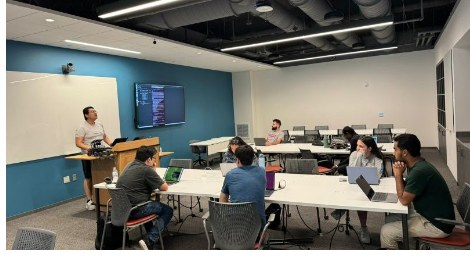
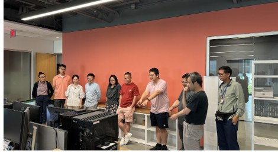
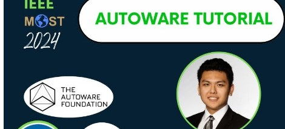
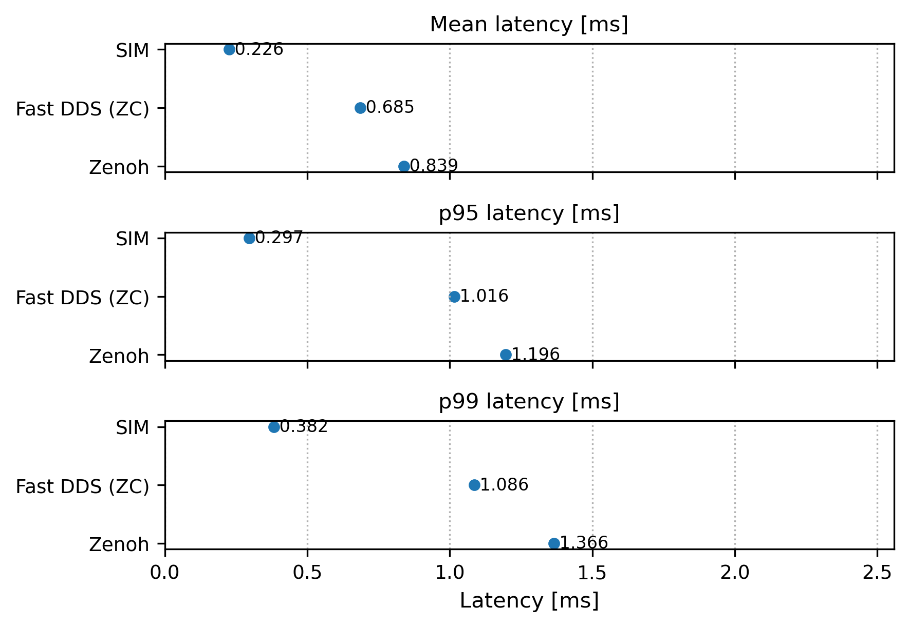
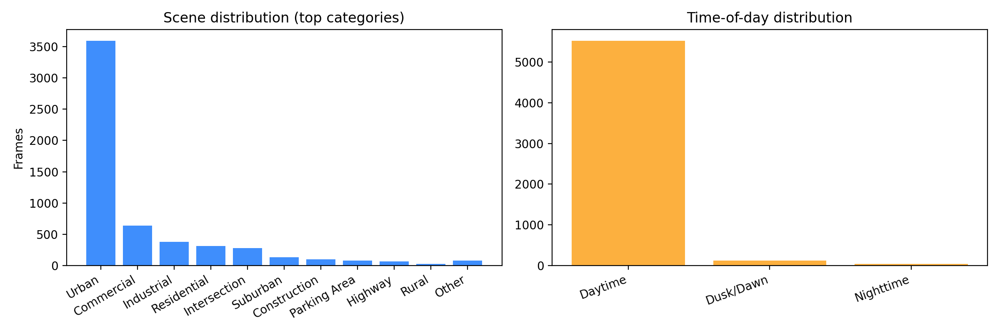

Built autonomy software across middleware, vehicle operating-system control, programmable intersections, and simulation/testbed infrastructure.
Faculty candidate in robotics, computer systems, and transportation
Systems for physical intelligence and autonomous mobility.
I build the systems layer for embodied AI: timing-aware autonomous-vehicle runtimes, programmable roadside infrastructure, digital twins, and evaluation tools that turn real deployments into measurable safety evidence.
2 UD AVsdeployed research platforms
98%lower middleware latency
$871Kexternal research support
Issued patent in cyber-physical testing; first-author IEEE TVT work on C-V2X collaborative autonomy has 70 Google Scholar citations listed in the current CV.
Co-authored a Springer textbook and created a graduate autonomous-driving course now required in UD's M.S. in AI autonomous-driving concentration.
Lab Agenda
My future lab will treat timing, uncertainty, infrastructure state, and experiment evidence as first-class system properties for physical AI. Autonomous vehicles are my primary testbed because they stress perception, planning, control, networking, infrastructure, and reproducibility at once.
Deployment Thread
My systems have been exercised on UD autonomous-vehicle platforms, STARTaxi demonstrations, ICAT, BlueICE, and roadside/V2X prototypes, connecting paper claims to measurable deployment behavior.
Collaborative Scope
I have collaborated with academic, government, and industry partners around Autoware, Ford, Western Digital, BlueHalo, Leidos, the Federal Highway Administration, Oak Ridge National Laboratory, Tier IV, and Toyota.
News and Mentions
Selected public updates, awards, and lab milestones.
Updated through June 16, 2026. This feed draws from public workshop pages, university stories, publication records, and public posts rather than a separate image rail.
2026
Autoware workshop tutorial at IEEE IV 2026
William He is part of the Autoware workshop program at IEEE Intelligent Vehicles Symposium 2026 in Detroit, with the tutorial and workshop scheduled for June 22, 2026.

Invited to speak on digital twins for intelligent vehicles
The DT-IV workshop program for IEEE IV 2026 lists William He for a talk on indoor CAV testbeds and 3D twins for edge and onboard vehicle computing.
Received the Pehrson Award and Chester Fellowship
William He announced receiving the Frank A. Pehrson Graduate Student Award for Outstanding Computer Science Research and the Daniel L. Chester Graduate Fellowship Award at the University of Delaware.
Coauthored PaRC paper presented at IEEE MOST 2026
The CAR Lab shared Yuxin Wang's IEEE MOST 2026 presentation of PaRC, an on-device parking-rule checking service for interpreting complicated street parking signs and making explainable parking decisions.
DaVoS accepted to the PISA workshop at IEEE MOST 2026
DaVoS introduces a physics-based, platform-agnostic safety model for autonomous vehicles and was accepted to the Physical Intelligence: Systems and Applications workshop.
Deployed a local LLM for CAR Lab knowledge workflows
William He deployed a local LLM service for the CAR Lab so students can query lab facilities, resources, publication guidance, paper-review support, and recent research without exposing early ideas to external tools.
Reached 100 total citations on Google Scholar
William He marked the 100-citation milestone on Google Scholar, a public research-impact signal that has continued to grow with the autonomous mobility systems work.
Two papers accepted to IEEE IV 2026
The 2026 cycle added two accepted papers: one on faster and more reliable autonomous-driving middleware, and one on graph-based dataset diversity and redundancy evaluation.
2025
DAVOS vehicle operating-system report released
The CAR Lab released DAVOS as a technical report and arXiv preprint, framing a unified vehicle operating-system architecture for real-time autonomy, extensible vehicle computing, storage, security, and low-latency data paths.
OpenIntersection and IPI were released publicly
The IPI release turned the OpenIntersection work into a public repository for software-defined intersections, V2X-facing APIs, and reproducible infrastructure experiments.
Launched Introduction to Autonomous Driving at Delaware
William He launched the graduate course Introduction to Autonomous Driving, later listed in the CV as required curriculum in the M.S. in AI autonomous driving concentration.
HydraU and STARTaxi showcased to Senator Coons's staff
A public CAR Lab update highlighted U.S. Senator Christopher Coons's staff visiting UD, riding in HydraU, and seeing SafeAI, EdgeAI, STARTaxi, smart infrastructure, and Autoware-based projects supported by NSF and industry collaborators.
Autonomous Driving Academy ran at the University of Delaware
UD publicized the academy led by William He, Weisong Shi, and Ren Zhong, extending CAR Lab work into a pre-college autonomous driving program.

Hosted ADASTEC leadership and demonstrated STARTaxi
The CAR Lab hosted ADASTEC visitors and used the visit to show STARTaxi and ongoing autonomy work involving William He, Ren Zhong, Boyang Tian, and Weisong Shi.
STARTaxi debuted during IEEE MOST 2025
The CAR Lab introduced STARTaxi as an academic autonomous ride-hailing service on STAR Campus, with William He and Yuxin Wang leading the vehicle side and undergraduate students building the app.
2024
IEEE Computer published “A Vision for Transformative Intersections”
The vision article framed OpenIntersection as a software-defined infrastructure direction and connected it to the Autoware ecosystem and real-world deployment paths.
Presented BlueICE and ICAT to the RSGO group
The talk focused on scalable autonomous-driving simulation and testbed work, extending the digital-twin and validation story around BlueICE and ICAT.

Hosted Tier IV North America leadership at the CAR Lab
Christian John, President of Tier IV North America and vice chair of the Autoware Foundation strategic planning committee, visited the lab during a period of active collaboration.

Taught Introduction to Mobile Robot Programming
The summer course used ICAT and Autoware for hands-on programming with connected and autonomous mobile robots.

Hosted a visiting faculty group at the CAR Lab
The visitor group included faculty from UVA, William & Mary, Auburn, UMass Dartmouth, Yeshiva, Stony Brook, Howard, and Wayne State.

Gave an Autoware tutorial at IEEE MOST 2024
The tutorial included a live ICAT demonstration at IEEE MOST 2024 in Dallas and complemented the ICAT paper accepted to the same conference.

2023
C-V2X collaborative autonomous driving paper appeared in IEEE TVT
The first-author IEEE Transactions on Vehicular Technology paper established one of the key foundations behind later OpenIntersection and IPI work.
Quoted during the STAR Campus and FinTech Innovation Hub opening
A UDaily story on the new space quoted William He on how the co-location of faculty, labs, and partners made cross-group collaboration easier in person.
Funding
External research support, proposal roles, and fellowships.
Sourced from the current CV and faculty-application materials. Totals reflect proposal and research participation, not independent PI status.
$871K
Lead graduate researcher and proposal contributor across externally supported work.
$180K
Tier IV and Toyota-supported research on Autoware, IPI, and open intersections.
$691K
Collaborative work on edge computing, connected autonomy, and dependable CPS infrastructure.
External Research Support
Tier IV
Design and Implementation of Infrastructure Programming Interface (IPI)
Proposal contributor and lead graduate researcher.
Tier IV
Investigating the Effect of C-V2X on Autoware.Universe
Proposal contributor and lead graduate researcher.
Toyota
Open Intersection Reference Design and Implementation
Proposal contributor and lead graduate researcher.
CADaas / NSF
Deterministic Communication and Predictive Computation for Connected Autonomous Driving as a Service
Proposal contributor and lead graduate researcher.
NSF CNS
Enabling Real-time, Scalable and Secure Collaborative Intelligence on the Edge
Proposal contributor.
Fellowships and Research Recognition
Frank A. Pehrson Graduate Student Award
University of Delaware, 2026. Single-recipient CIS graduate research award for outstanding computer science research.
Daniel L. Chester Graduate Fellowship Award
University of Delaware, 2025 and 2026. Annual CIS graduate fellowship awarded in consecutive years.
Projects
Relevant GitHub projects and research systems.
Audited from public and private repositories visible to the authenticated GitHub account. Public repositories link out; private or in-progress systems are described without exposing unavailable links.
Research-Grade Artifacts

Runtime / OSSIM / DAVOS
Freshness-aware middleware and autonomous-vehicle OS work deployed on UD AV platforms; up to 98% lower transport latency and 13.6 ft shorter emergency-braking distance at 40 mph.
RepositoryIPI / OpenIntersection
Open-source Intersection Programming Interface for software-defined roadsides: standardized APIs, J2735 helpers, UPER encoding, ROS/Mocar adapters, and V2X experiment tracking.
Repository
Dataset / BenchmarkCARScenes
Semantic VLM dataset release workspace with schema, splits, validation scripts, benchmark reporting, and paper sources.
RepositoryDT_World
Lidar-first digital-twin pipeline for synchronized driving data, tiled road meshes, PBR textures, semantic materials, object manifests, and OpenDRIVE maps.
BlueICE
Containerized CARLA, SUMO, Autoware, and hardware-in-the-loop co-simulation foundation for reproducible autonomous-driving experiments.
RepositoryICAT
Indoor Connected and Autonomous Testbed for vehicle computing, Autoware education, and connected autonomy demonstrations.
STARTaxi / HydraU
Academic autonomous ride-hailing platform on UD STAR Campus, connecting Autoware, DAVOS, vehicle operations, and student-built service interfaces.
Autoware, V2X, and Vehicle Platforms
AutowareDEMO
Static Three.js Autoware/RViz-style demo viewer for maps, trajectory, perception objects, camera views, and operator walkthroughs.
RepositoryV2X_Autoware
ROS 2 workspace bridging CARLA traffic lights to J2735 SPaT/MAP messages and Autoware-facing V2X nodes.
RepositoryAutowareUniverse-Carla
Autoware and CARLA co-simulation baseline with UD maps and BlueICE integration.
RepositoryUDAutoware
University of Delaware Autoware.Universe workspace and maps for local autonomous-driving experiments.
Repositoryautoware_v2x_msgs
V2X message definitions and support artifacts used by Autoware and infrastructure experiments.
RepositoryAutowareUniverse-CARLA-CPPBridge
C++ bridge work for connecting Autoware.Universe and CARLA simulation workflows.
RepositoryC-V2X CARLA
CARLA, ROS 2, and C-V2X message integration for collaborative autonomous-driving simulation.
CCAD
Collaborative autonomous-driving framework using C-V2X, RSU/OBU devices, edge computing, and lane-keeping guidance.
RepositoryActive and Private Research Prototypes
InfraSense
Infrastructure sensing and V2X web/runtime work for live maps, DelDOT cameras, MQTT feeds, and intersection state.
MIRAGE
Mixed-reality Injection for Real-world Autonomous Ground-vehicle Evaluation.
MeshUnderOcclusion
Occlusion-aware mesh and cooperative perception prototype for autonomous systems.
Indoor Vision-Supplemented Localization
Vision-assisted localization experiments for indoor autonomy settings.
Indoor LiDAR Dynamic Localization
LiDAR-based dynamic localization work for indoor connected autonomy.
ARIS
Augmented Responsive Intersection for Safety.
DynamicYOLO
Routed YOLO experiment scaffold with baseline training, routed inference, logging, and dashboard support.
AVModelSwitch
Autonomous-vehicle model-switching research prototype.
Foundational and Earlier Work
UDrive
Autonomous-vehicle driving dataset benchmark and scenario/image analysis tooling.
RepositoryLaneKeepingwithV2I
Lane-keeping work with vehicle-to-infrastructure communications.
AdvancedLaneDetection
FFT-based lane-detection exploration for road-camera imagery.
ORB_SLAM3_WINDOWS
ORB-SLAM3 build and integration work on Windows.
RepositorySeniorProjectCollisionAvoidance
Boston University senior project on group collision avoidance.
CosmicElectronNeuralNetworks
Machine-learning project work outside the autonomy stack, included as broader ML background.
RepositoryPublications
Selected publications and book.
Google Scholar profile lists 120+ citations as of June 2026; the current CV highlights 70 citations for the first-author IEEE TVT article on C-V2X collaborative autonomy.
Introduction to Autonomous Driving
W. Shi, Y. He. Springer, 2025. ISBN 3031994841.
A Faster and More Reliable Middleware for Autonomous Driving Systems
Y. He, W. Shi. Accepted to IEEE Intelligent Vehicles Symposium, 2026.
A Graph-Based Metric on Dataset Diversity and Redundancy Evaluation
Y. He, H. Chen, I. Safro, W. Shi. Accepted to IEEE Intelligent Vehicles Symposium, 2026.
DaVoS: An Instantaneous Safety Model for Autonomous Vehicles
Y. He, Y. Wang, B. Tian, W. Shi. Physical Intelligence: Systems and Applications Workshop, 2026.
A Vision for Transformative Intersections
Y. He, W. Shi. IEEE Computer, 57(12):58-68, 2024.
DOITowards C-V2X Enabled Collaborative Autonomous Driving
Y. He, B. Wu, Z. Dong, J. Wan, J. Zhang, W. Shi. IEEE Transactions on Vehicular Technology, 72(12):15450-15462, 2023.
DOIQuantitative Analysis of Storage Requirement for Autonomous Vehicles
Y. Wang, Y. He, R. Wang, W. Shi. ACM HotStorage, 2024. DOI: 10.1145/3655038.3665948.
ICAT: An Indoor Connected and Autonomous Testbed for Vehicle Computing
Z. Tian, Y. He, B. Tian, R. Zhong, E. Foorginejad, W. Shi. IEEE MOST, 2024.
DOITo Turn or Not To Turn, SafeCross is the Answer
B. Wu*, Y. He*, Z. Dong, J. Wan, J. Zhang, W. Shi. IEEE ICDCS, 2022. *Equal contribution.
DOIAn Advanced Framework for Ultra-Realistic Simulation and Digital Twinning for Autonomous Vehicles
Y. He, H. Chen, W. Shi. arXiv:2405.01328; presented at TRB Annual Meeting 2025.
arXivDAVOS: An Autonomous Vehicle Operating System in the Vehicle Computing Era
Y. Wang, Y. He, B. Tian, L. Xian, W. Shi. Technical report / arXiv preprint, 2026.
arXivCARScenes: Semantic VLM Dataset for Safe Autonomous Driving
Y. He, W. Shi. Semantic VLM dataset and benchmark workspace for safe autonomous driving.
RepositoryTalks
Invited talks, tutorials, and technical presentations.
Physics-Aware System Simulation for Intelligent Vehicles
Invited talk, Digital Twins for Intelligent Vehicles: From Agent-Level to System-Level Twins, IEEE Intelligent Vehicles Symposium.
Autoware Open Source Tutorial
IEEE IV 2026 Autoware tutorial with the Autoware Foundation community.
Digital Twins for Autonomy Verification and Validation
Invited talk, UCI CADRI Workshop, University of California, Irvine.
The Need for Digital Twins and Simulation for Autonomous Vehicle Testing
Invited talk, College of William & Mary.
Autoware Tutorial at IEEE MOST
Live ICAT and Autoware demonstration at IEEE MOST 2024, Dallas.
ICAT Tutorial at AutoSens
CAR Lab tutorial on open-source connected and autonomous vehicle testbeds, vehicle computing, and remote testing.
BlueICE and ICAT Presentation
RSGO group presentation on scalable and seamless autonomous-driving simulation.
Teaching
Courses and educational platforms.
Introduction to Autonomous Driving
University of Delaware, Fall 2025. Created and taught this graduate-level course; now required in the M.S. in AI Autonomous Driving concentration. The inaugural offering enrolled 20+ students and used 1/10-scale and real-world autonomous vehicles.
Introduction to Mobile Robot Programming
University of Delaware, Summer 2024. Instructor. Students worked with ICAT and Autoware on the STAR Campus.
Autonomous Driving Academy
University of Delaware, Summer 2025. Course developer and instructor for a pre-college autonomous driving program.
Textbook
Co-authored Introduction to Autonomous Driving with Weisong Shi, published by Springer.
Service
Professional service, leadership, mentoring, and deployment experience.
Leadership
- Autoware Foundation API Workgroup Lead.
- Autoware Foundation Technical Steering Committee Member.
- Autoware Foundation Strategic Planning Committee Member.
- CISC Graduate Promotion Unit founder and president.
Professional Service
- IEEE MOST 2025 Field Demo Chair.
- SE4ADS at ICSE 2025 Program Committee Member.
- AAAI 2025 Program Committee Member.
- CAV@ASPLOS 2024 Program Committee Member.
Reviewer
AAAI, CVPR, TRB Annual Meeting, IEEE WCNC, IEEE Vehicular Technology Conference, IEEE SEC, IEEE MOST, ACM Computing Surveys, and Multimedia Tools and Applications.
Mentoring
- CISC Graduate Promotion Unit founder and president.
- VIP Mentor, University of Delaware.
- DSU-UD Summer Engineering Research Experience mentor.
Industry Experience
- Torc Robotics, ML Engineer co-op on AV perception data curation.
- Joyson Safety Systems, integration engineer on GM Hands-On-Wheels systems.
- UISEE Technology, autonomous-shuttle cyber-physical testing intern.
Intellectual Property
Issued patent in cyber-physical testing: Method and system for determining test system of mechanical electronic equipment, CN 2018114055597, issued Feb. 19, 2019.
Contact
Collaborations, talks, faculty opportunities, and open-source autonomy.
I am actively looking for assistant professor opportunities and research collaborations across physical intelligence, robotics systems, V2X, infrastructure, digital twins, edge computing, and reproducible cyber-physical systems.